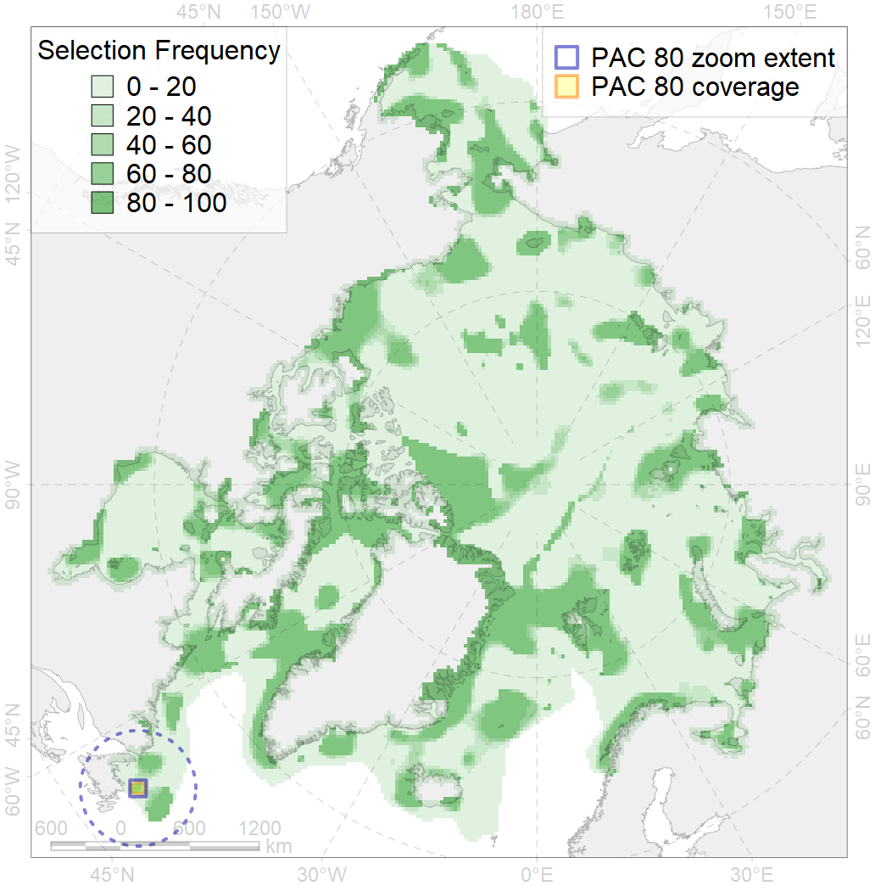
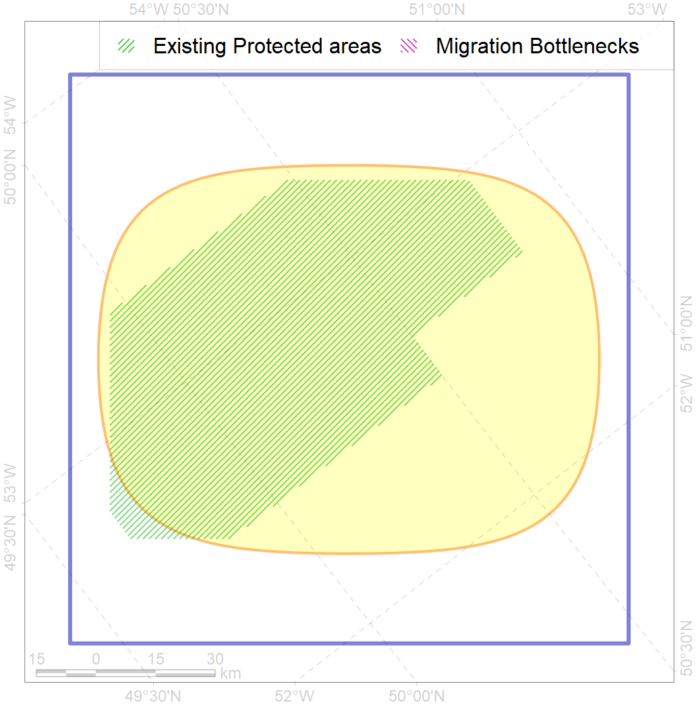

80
For more information regarding this PAC and to conduct custom spatial analysis using the PAC data or any spatial query, please consult Accenter.

0
CFs entirely within the PAC area
0
CFs at least 25% within the PAC area
0
CFs with their target entirely achieved in the PAC
0
CFs with at least 50% of their target achieved in the PAC
| CF ID | CF Name | Proportion in the PAC | Conservation Target | Contribution to ArcNet Target Achievement | PAC’s Contribution to the Achieved Target |
|---|---|---|---|---|---|
| 2030 | Hooded seal (Cystophora cristata) whelping grounds, Front region | 7.7% | 38.4% | 16.2% | 16.0% |
| 5038 | Blue whale (Balaenoptera musculus) summer feeding grounds, western North Atlantic | 5.3% | 25.2% | 17.6% | 11.2% |
| 5060 | Humpback whale (Megaptera novaeanglia) summer feeding grounds, westen North Atlantic | 4.0% | 24.0% | 14.1% | 6.4% |
| 5050 | Fin whale (Balaenoptera physalus) summer feeding grounds, western North Atlantic | 3.7% | 26.4% | 11.6% | 6.2% |
| 7145 | Benthic communities, III.2.1.4. Ungava-Labradoran shelf | 2.7% | 4.6% | 49.5% | 6.7% |
| 4080 | Fish communities, Scandian, Central-Arctic and Baffin Deep Sea Zoogeographic Districts, Nort-Atlantic Abyssal Province, Deepsea Atlantic Region | 2.5% | 5.3% | 39.1% | 6.9% |